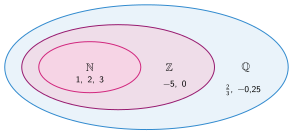

Los números enteros no sirven para expresar el resultado de todos los repartos: \(7 : 2\) no es un número entero. Para ello usamos las fracciones, y con ellas formamos el conjunto de los números racionales.

Fracciones equivalentes
Comparación y representación
Para comparar fracciones se reducen a común denominador, usando como denominador común el m.c.m. de los denominadores. Después basta comparar los numeradores.
Para representar una fracción en la recta se divide cada unidad en tantas partes iguales como indica el denominador y se cuentan las partes que indica el numerador, hacia la derecha si es positiva y hacia la izquierda si es negativa.
1.3.1
Simplifica hasta la fracción irreducible: \(\dfrac{90}{126}\)
1.3.2
Ordena de menor a mayor: \(\dfrac{2}{5}\), \(-\dfrac{1}{3}\), \(\dfrac{3}{10}\), \(-\dfrac{1}{2}\)
Lo que escribes se guarda solo en este navegador. Para entregarlo, pulsa «Copiar mis respuestas» y pégalo en Classroom.